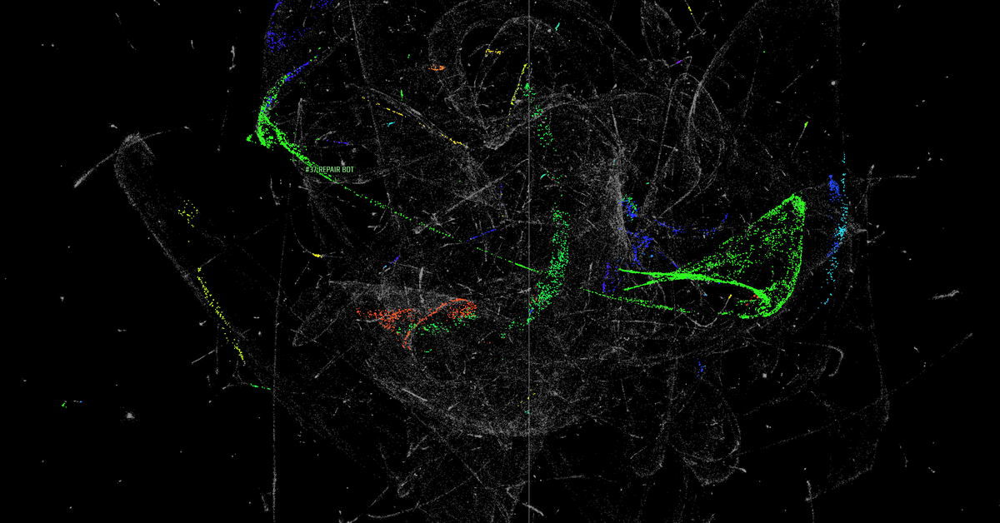

4D-UMAP + HDBSCAN interactive identity clustering
A self-contained three.js visualization of unsupervised identity discovery: object detections embedded with 4D-UMAP and clustered with HDBSCAN, shown as a colored 3D slice of the 4D embedding.
Explore
Hover a colored point to reveal its object ID; linger to highlight the object's whole 4D cluster.
Left-drag to rotate · right-drag to pan · wheel to zoom.